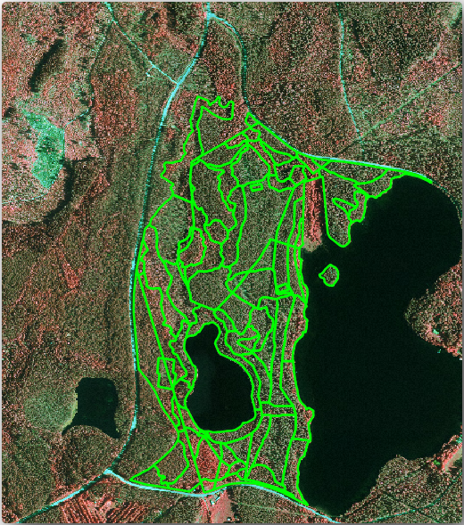
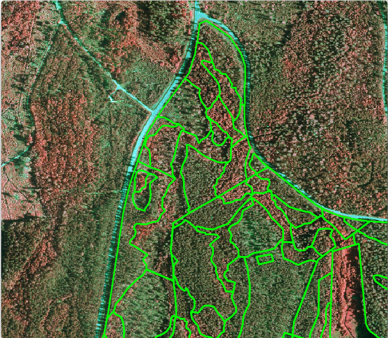
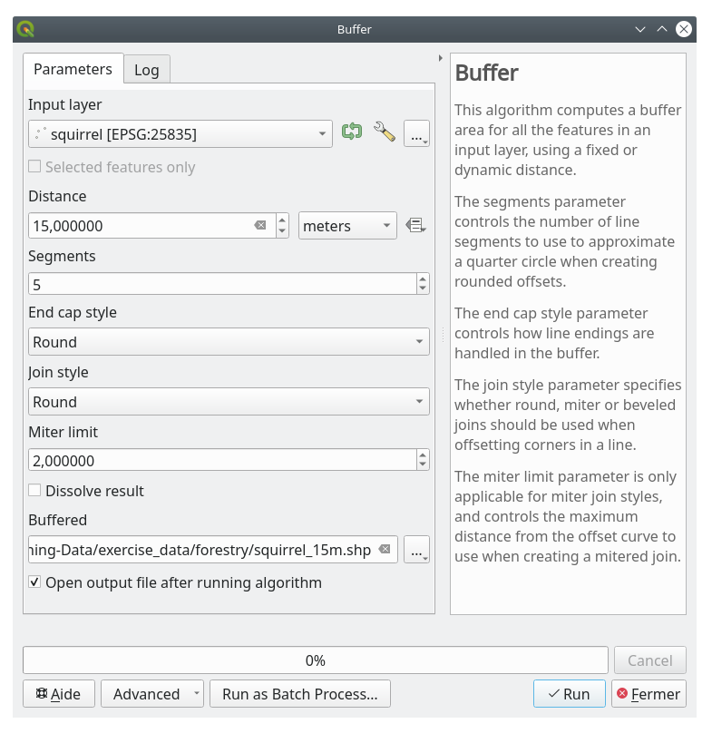
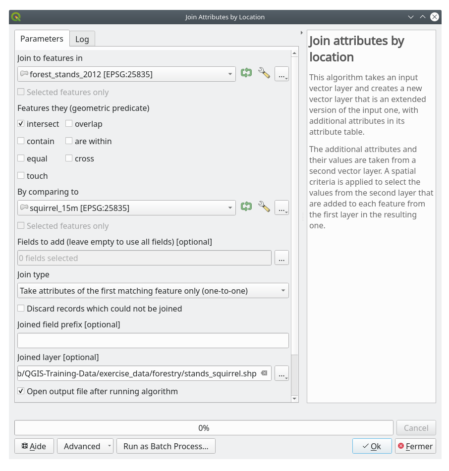

重要
翻訳は あなたが参加できる コミュニティの取り組みです。このページは現在 100.00% 翻訳されています。
14.4. レッスン: 林分を更新する
古い目録の地図から情報をデジタイズし、林分に対応する情報を追加したので、次のステップは、森林の現在の状態の目録を作成することでしょう。
航空写真に従って、新しい林分をデジタイズします。前回のレッスンと同様に航空赤外線写真(CIR)を使います。この種類の画像は、青色光の代わりに赤外光を記録したもので、植生域の調査に広く利用されています。
林分をデジタイズした後、このような保全条例により与えられた新たな制約などの情報を追加します。
このレッスンの目標： 新しい林分の集合をCIR航空写真からデジタイズし、他のデータセットから情報を追加します。
14.4.1. ★☆☆ （初級レベル） 古い林分を現在の航空写真と比較する
フィンランド国土地理院はオープンデータ政策をとっており、航空写真、従来の地形図、DEM、LiDARデータなど、様々な地理データをダウンロードすることができます。このサービスは、ここ から英語でアクセス可能です。この演習で使用した航空画像は、このサービスからダウンロードした2枚のオルソCIR画像(M4134F_21062012とM4143E_21062012)から作成したものです。
QGISを開き、プロジェクトのCRSを で、 ETRS89 / ETRS-TM35FIN に設定します
CIR画像
rautjarvi_aerial.tirをプロジェクトに追加する:ファイルマネージャのブラウザで
exercise_data\forestry\フォルダに移動しますrautjarvi_aerial.tifをプロジェクトにドラッグ＆ドロップします
QGISプロジェクトを
digitizing_2012.qgsとして保存します
CIRの画像は2012年のものです。1994年に造られた林分をほぼ20年後の状況と比較することができます。
前のレッスンで作成した
forest_stands_1994.shpレイヤを追加する:ファイルマネージャのブラウザで
exercise_data\forestry\フォルダに移動しますプロジェクトにファイル
forest_stands_1994.shpをドラッグ＆ドロップします
ポリゴンを透過して見えるようにレイヤのシンボロジを設定する:
forest_stands_1994 を右クリックする
プロパティ を選ぶ
 シンボロジ タブに移動する
シンボロジ タブに移動する塗りつぶし色 を透明な塗りつぶしに設定する
ストローク色 を紫に設定する
ストローク幅 を
0.50 mmに設定する
均質な森として解釈する可能性があるものに、古い林分がどのように従っているか（あるいは従っていないか）を確認してください。
ズームとパンしてください。古い林分でなお静止画に対応するものとしないものがあることに気づくででしょう。
20年ほどが経過しており、また、様々な森林施業（伐採、間伐...）が行われたため、これは通常の状況です。また、1992年当時にデジタイズしたときには林分が均質に見えていたが、時間が経過するにつれ、いくつかの森は異なる形で成長した可能性もあります。あるいは当時の森林目録の優先順位が現在のそれとは異なっていた可能性もあります。
次は、この画像に対する新しい林分を古い林分を使用せずに作成します。その後、違いを見るためにそれらを比較できます。
14.4.2. ★☆☆ （初級レベル） CIR画像を解釈する
道路や湖によって制限される、古い調査でカバーされていた同じ地域を、デジタイズしてみましょう。前の演習のようにすでに林分のほとんどが含まれているベクタファイルを使って始められるので、地域全体をデジタイズする必要はありません。
レイヤ
 forest_stands_1994 を削除する
forest_stands_1994 を削除するプロジェクトにファイル
exercise_data\forestry\forest_stands_2012.shpを追加するこのレイヤのスタイルを、ポリゴンには塗りつぶしなしで、境界が表示されるように設定します
forest_stands_2012レイヤの プロパティ ダイアログを開く- シンボロジ タブに移動する
塗りつぶし色 を透明な塗りつぶしに設定する
ストローク色 を緑に設定する
ストローク幅 を
0.50 mmに設定する

目録エリアの北側がまだ欠けていることがわかります。あなたの仕事は、この欠けている林分をデジタイズすることです。
始める前に、すでにデジタイズした林分および画像内の対応する森林を見直すことにいくらか時間を使ってください。林分境界がどのように決定されるかについて理解してみてください。林業の知識をいくらか持っている場合それが役立ちます。
考慮すべきいくつかの点:
どの林に落葉樹があり（フィンランドではほとんどがシラカバ林）、どの森に針葉樹があるのか（この地域ではマツやトウヒ）。CIR画像では、通常、落葉樹は明るい赤色で、針葉樹は濃い緑色で表示されます。
森林の樹齢は？樹冠の大きさは画像で確認できます。
異なる林分の密度はどれくらいでしょう？最近間伐が行われた林分は、樹冠と樹冠の間に隙間があり、周囲の他の林分と容易に区別できるはずです。
青みを帯びた地域は不毛の地形、道路や市街地、成長を開始していない作物などを示しています
林分を特定しようとする場合、画像を拡大し過ぎないでください。この画像は、1:3 000から1:5 000の縮尺で十分です。下の画像（縮尺1:4000）を見てください:
14.4.3. ★☆☆ （初級レベル） 自分でやってみよう: CIR画像から林分をデジタイズする
林分をデジタイズするときは、樹種、林齢、林分密度...の観点から、可能な限り均一で取得しようとすべきです。しかし、詳細すぎてはいけません。さもないと、小さなたくさんの林分を作ることになり、それはまったく役に立たないでしょう。小さ過ぎず（少なくとも0.5ヘクタール）また大き過ぎない（せいぜい3ヘクタール）、林業の文脈において意味ある林分を取得しようとする必要があります。
これらの点を念頭に、不足している林分をデジタイズします。
スナップとトポロジオプションを設定する:
に移動します
 スナップを有効にする を押し、詳細設定 を選びます
スナップを有効にする を押し、詳細設定 を選びます forest_stands_2012 レイヤをチェックします
forest_stands_2012 レイヤをチェックします型 を :guilabel:`頂点`に設定する
許容範囲 を
10に設定する単位 を ピクセル に設定する
重なりを避ける の下のボックスをチェックする
 詳細設定に従う を選びます
詳細設定に従う を選びますポップアップを閉じます
レイヤリストの forest_stands_2012 レイヤを選ぶ
 編集モード切り替え をクリックして編集を有効にします
編集モード切り替え をクリックして編集を有効にします前のレッスンと同じ技法を使ってデジタイズを始めます。唯一の違いは、スナップするポイントレイヤがないことです。このエリアでは約14の新しい林分が得られるはずです。デジタイズしている間、
StandIDフィールドを901から始まる数字で埋めます。作業が完了したら、レイヤは次のようになります。

{kind=link}
これで、CIR 画像から解釈された、2012 年のさまざまな森林を示すポリゴンの新しい集合ができあがりました。しかし、森林目録のデータがありません。そのため、森林を訪問し、各林分の森林属性を推定するために使用するサンプルデータを入手する必要があります。その方法は次のレッスンで説明します。
この区域で考慮する必要のある自然保護規制に関する追加情報を加えることもできます。
14.4.4. ★☆☆ （初級レベル） 理解しよう: 保全情報で林分を更新する
作業している区域には、森林計画を立てる際に考慮しなければならない保護規制がいくつかあります:
エゾモモンガ（Pteromysのvolans）の保護種の二箇所が同定されています。規定によれば、スポットの約15メートルの区域は手つかずのまま残さなければなりません。
この区域の小川沿いに生育している特別に注目すべき河畔林を保護しなければなりません。現地を視察したところ、小川の両側20メートルを保護しなければならないことが判明しました。
リスの指定区域に関する情報を含むベクタファイルと、北区域から湖に向かって流れるデジタイズした小川を含むベクタファイルがあります。
exercise_data\forestry\フォルダから、squirrel.shpとstream.shpファイルをプロジェクトに追加する。 属性テーブルを開く ツールを使って
属性テーブルを開く ツールを使って squirrelレイヤを表示するエゾモモンガと定義されている2つの指定区域があること、及び保護すべき区域がその指定区域から15メートルの距離で示されていることがわかります。
保護する区域をより正確に区切りましょう。保護距離を使って、ポイント位置の周囲にバッファを作ります。
を開く。
入力レイヤ に
 squirrel を設定する
squirrel を設定する距離 に
15 メートルを設定する出力レイヤ に
exercise_data\forestry\squirrel_15m.shpを設定する- アルゴリズムの終了後に出力ファイルを開く をチェックする
実行 をクリックします
プロセスが完了したら 閉じる をクリックする

区域北部の指定区域を拡大すると、バッファ区域が隣接する2つの林分にまたがっていることがわかります。つまり、その林分で森林作業が行われるときは常に、保護指定区域も考慮に入れなければなりません。

リスの指定区域を保護するために、新しい林分に新しい属性（列）を追加し、保護されなければならない指定区域についての情報を格納します。この情報は森林作業が計画された時にいつでも利用でき、現場チームは作業開始前に手をつけてはいけない場所に印をつけることができます。
リスに関する情報を林分に結合するには、属性の空間結合 アルゴリズムを使うことができます:
を開く。
地物を結合するレイヤ に
forest_stands_2012 を設定する空間的関係 は
交差する をチェックする比較対象 に
squirrel_15m を設定する結合型 に 最初に合致した地物の属性のみを取得（１対１結合） を設定する
結合対象がなかった地物を破棄 はチェックしないでおく
出力レイヤ に
exercise_data\forestry\stands_squirrel.shpを設定する- アルゴリズムの終了後に出力ファイルを開く をチェックする
実行 をクリックします
プロセスが完了したら、ダイアログを 閉じる ことができます。

これでエゾモモンガの保護情報を表示する新しい林分レイヤ stands_squirrel.shp ができました。
stands_squirrelレイヤの属性テーブルを開くテーブルヘッダの point_pr フィールドをクリックして、テーブルを並べ替える。

保護指定区域の情報を持つ林分があることがわかります。林分データにあるこの情報によって、森林管理者は保護に配慮する必要があることがわかります。そうすれば、森林管理者は squirrel データセットからその指定区域を取得し、その区域を訪問して指定区域の周囲に対応する緩衝地帯に印をつけ、現場の作業者がリスの環境を乱さないようにすることができます。
14.4.5. ★☆☆ （初級レベル） 自分でやってみよう: 流域への距離で林分を更新する
保護されたリスの指定区域と同じアプローチで、林分に小川に関連する保護情報を更新することができます。いくつかのポイントがあります：
バッファが小川の周囲
20メートルであることを覚えておくすべての保護情報を同じベクタファイルにしたいので、
stands_squirrel.shpをベースレイヤとして使用する。出力の名前を
forest_stands_2012_protect.shpとする
プロセスが完了したら、出力レイヤの属性テーブルを開き、小川に関連する河畔林の保護情報がすべて揃っていることを確認する。
結果に満足したら、QGISプロジェクトを保存する。
14.4.6. 結論
林分をデジタイズするCIR画像をどのように解釈するかを見てきました。もちろんより正確な林分を作るためにはいくらか練習がいるでしょうし、通常は土壌地図のような他の情報を使用すればより良い結果が得られるでしょうが、これでこの種の業務のための基礎はわかりました。そして、他のデータセットからの情報を追加することで、非常に簡単な作業となりました。
14.4.7. 次は?
デジタイズした林分は将来的に森林施業を計画するために使用されるでしょうが、まだ森林に関する詳細な情報を取得する必要があります。次のレッスンでは、調査にだけのデジタイズされた森林面積をサンプリングプロットのセットを計画する方法を見て、森林のパラメーターの全体的な見積もりを取得します。